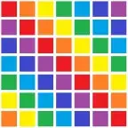

Color Converter API
- Downloads
- 96,015
- Favourites
- 132
- Mod lists
- 262
Color Converter API
An SPT module mod that extends the functionality of the client, allowing the server to use raw hexcode color values for fields that ordinarily can only support BSG-created color enums.
This mod should be forward-compatible with all new client releases for EFT (unless something very, very significant changes) and does NOT need to be updated.
Please note that on its own, this mod does nothing! It allows OTHER mods to use the full color spectrum where BSG uses the predefined color enums.
License
Do not reupload or redistribute anywhere without explicit permission - please instead link to this mod page as part of your dependencies.
- Simply extract the zip file contents into your root SPT folder (where EscapeFromTarkov.exe is).
- Your BepInEx/plugins folder should now contain the file
RaiRai.ColorConverterAPI.dllinside.
You can check to see if the plugin exists in your server mod’s source code any way you’d like, but an easy copy-paste check is here:
Typescript (SPT < 4.0)
private static IsPluginLoaded(): boolean {
const fs = require('fs'); const pluginName = "rairai.colorconverterapi.dll"; // Fails if there's no ./BepInEx/plugins/ folder
try {
const pluginList = fs.readdirSync("./BepInEx/plugins").map(plugin => plugin.toLowerCase());
return pluginList.includes(pluginName);
} catch {
return false;
}
}
Csharp (SPT >= 4.0)
internal bool GetColorPlugin()
{
var modPath = _modHelper.GetAbsolutePathToModFolder(Assembly.GetExecutingAssembly());
var bepinexPath = System.IO.Path.GetFullPath(System.IO.Path.Combine(modPath, @"..\..\..\..\BepInEx\"));
var file = Directory.GetFiles(bepinexPath, "RaiRai.ColorConverterAPI.dll", SearchOption.AllDirectories);
return file.Any();
}
You can handle the result of this function however you’d like. Once you have validated that the plugin exists, you can proceed to fill in the fields for color in your item database with hexcodes in lieu of a color enum.
For example:
“TracerColor”: “#FF00FF”,
“BackgroundColor”: “#2A2AFF”,
Short 3-byte hexcode colors are also supported like so:
“BackgroundColor”: “#F90”,
Which will be interpreted as:
“BackgroundColor”: “#FF9900”,
As of version 1.1.0, you can optionally pass a fourth hex value for an Alpha (otherwise, it is treated as FF/255).
“BackgroundColor”: “#FF2AFF99”,
- July 10th, 2024:
- Refactor to module changes for SPT 3.9.0+.
- Added support for alpha values for hex codes.
Version
1.1.1
Confirmed working on SPT 4.0.0+.
Changelog:
Fixed case-sensitive string parsing for color enum. (Error “Failed to read JSON value for TaxonomyColor” for certain mods.)
Hey! Thanks for downloading, if you’d like to support my work, you’re more than welcome to support me at the link below or follow along at my Ko-Fi page here:
Version
1.1.0
Changelog:
Refactor to module changes for SPT 3.9.0+.
Added support for alpha values for hex codes.
Hey! Thanks for downloading, if you’d like to support my work, you’re more than welcome to support me at the link below or follow along at my Ko-Fi page here:
Version
1.0.0
(Reupload due to broken permissions.)
Link not working? Try downloading from here:
https://github.com/RaiRaiTheRaichu/ColorConverterAPI/releases
https://dev.sp-tarkov.com/RaiRaiTheRaichu/ColorConverterAPI/releases